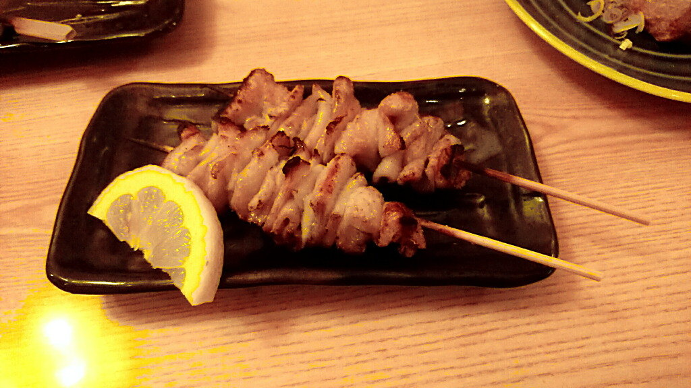
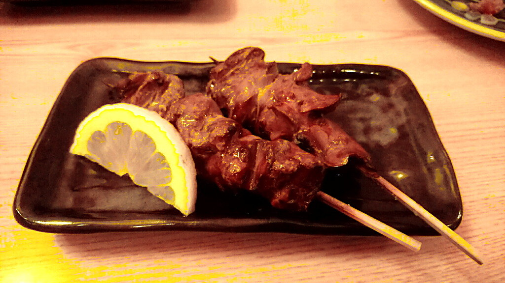
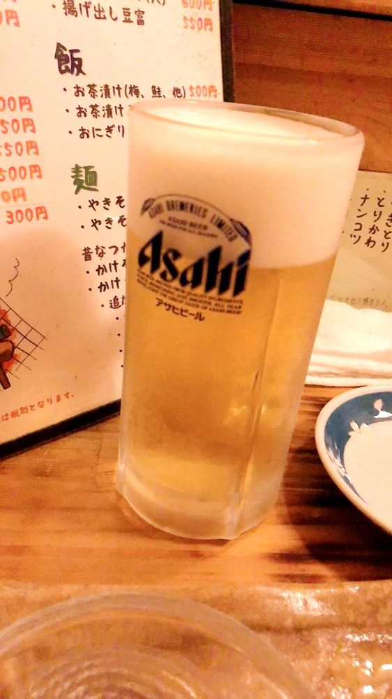
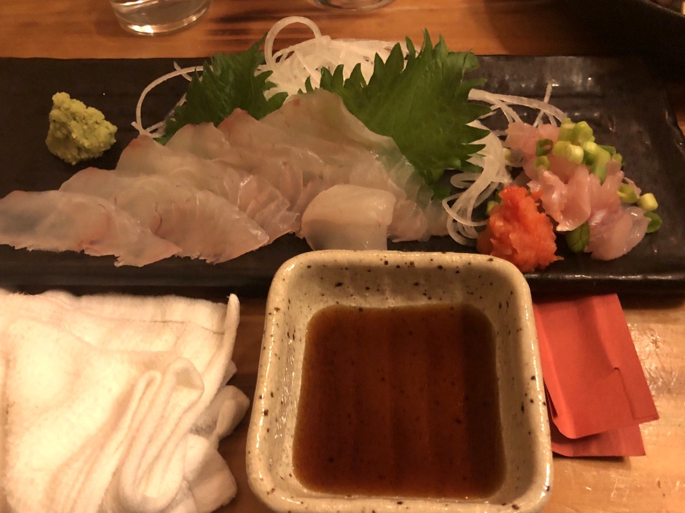
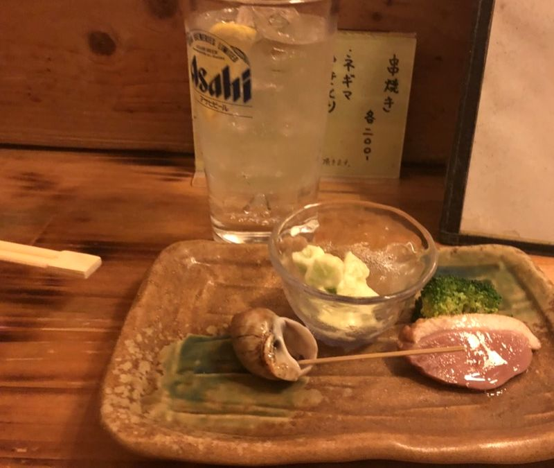

其の一
炭火の串
強火の遠火でじっくりと。炭の香りをまとった焼き鳥・焼きとんを、タレと塩でどうぞ。

フラっと入って、大当たり。
そんな一軒でありたいと思っています。
「炭きち」は古河駅東口から徒歩2分、カウンター中心・18席の炭火焼き居酒屋です。炭火でじっくり焼き上げる串と、その日仕入れた魚の刺身、そしてキンキンに冷えたビール。気取らない店ですが、素材と温度には手を抜きません。
お一人でも、お仕事帰りの一杯でも。出張でお泊まりの方にもご贔屓いただいています。

強火の遠火でじっくりと。炭の香りをまとった焼き鳥・焼きとんを、タレと塩でどうぞ。
タコ、ヒラメ、しめ鯖。その日の仕入れで内容が変わる刺身は、まず黒板をご覧ください。

スーパードライ「SUPER COLD」認定店。4℃未満のキンキンに冷えた一杯を、炭火の熱と一緒に。


「フラっと入って、大当たり。」— 食べログの口コミより
「日本酒の温度管理もバッチリ。」
| 店名 | 炭きち（すみきち） |
|---|---|
| 住所 | 〒306-0017 茨城県古河市東本町1-3-5 JR古河駅 東口より徒歩2分 |
| 電話 | 0280-31-0366 |
| 営業時間 | 18:00 – 23:00 |
| 定休日 | 日曜・月曜※日曜が祝日の場合は営業する場合があります。お電話でご確認ください。 |
| 席数 | 18席（20名様以下の貸切可） |
| 駐車場 | あり（2〜3台） |
| お支払い | 現金・PayPay※カード・電子マネーはご利用いただけません |
ご予約・貸切のご相談はお電話にて。もちろん、フラっとのご来店も大歓迎です。
ご予約・お問い合わせ 0280-31-0366営業時間 18:00–23:00｜日曜・月曜定休